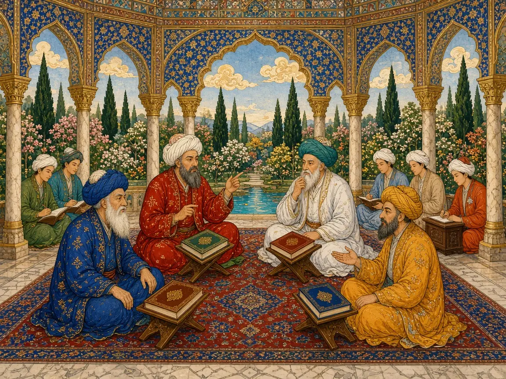
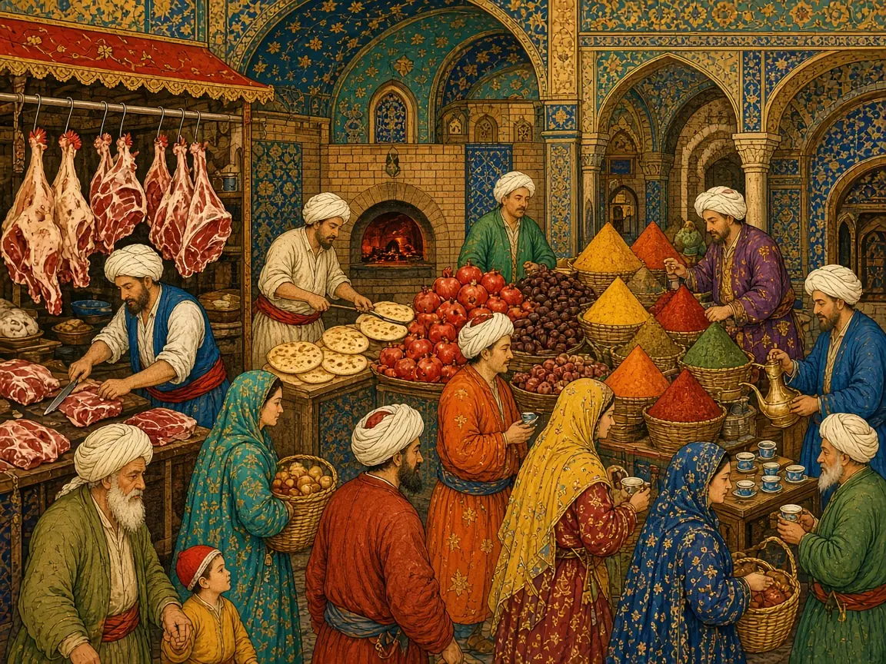
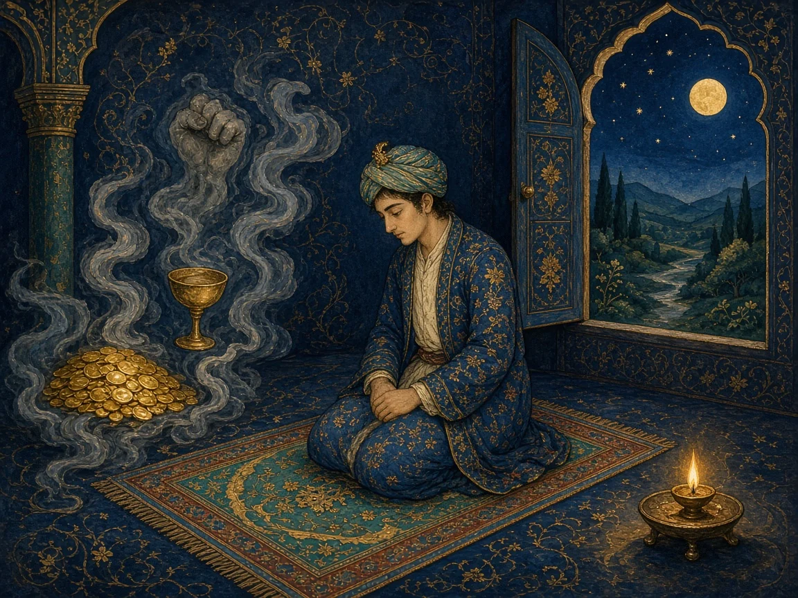

p. 301
Who Speaks for Islam?
“The most persistent mistake Westerners make about Islam today is to think of it as monolithic.”
Rodney Stark, sociologist of religion, 2008 (quoted p. 301)
- Mainstream: Sunnis, Shi‘as, Sufis
- Zealous: Wahhabis, the Muslim Brotherhood, the Taliban, the Islamic State
- Moderate and progressive movements
p. 311
Required, Forbidden, Permitted
Every person is born with an equal inclination toward God and the good (Oprah in Jiddah). All actions fall into one of three categories:
Required
Good actions such as the Five Pillars.
Prohibited
Evil actions explicitly forbidden, such as idolatry, immorality, and theft.
Permitted
Neutral matters left to the believer’s discretion.
Muslims must “commend what is good and reprimand evil.” (p. 312)
p. 311
The Hadith: The Prophet’s Example
- The Qur’an is the main source; for issues it leaves undefined, the Prophet’s sayings and life are authoritative
- Hadith, “traditions”: reports of what Muhammad said or did, vigorously collected and evaluated after his death
- They help explain the Qur’an, so their authority comes close to the Qur’an itself
- Compiled about 632–900 (timeline, p. 325)

Review Question 7 · p. 311
Shari‘a: God’s Way for All of Life

- Shari‘a, “way, path”: the formal system of traditional Islamic law
- Headlines about stoning and amputation, “although based on actual events, give an incomplete and misleading impression”
- Covers politics, business, family life, sexuality, hygiene, and social issues
- Muslims do not divide civil law from religious law: it is simply God’s law for all of life
Review Question 7 · pp. 311–312
Four Schools and a Fatwa
- Four Sunni schools of law, formed 750–850, still exist: Hanafi, Maliki, Shafi‘i, Hanbali
- Not schools of theology: same beliefs, different ways of defining morals and practice in precise legal terms
- Fatwa: a ruling by an imam trained in Shari‘a urging a particular action
- Fully implemented in only a few nations; used selectively in many; sought by some minorities in the West (Britain and France)

Chapter 12 Review Questions
Checkpoint: Review Question 7
Review Question 7 · Checkpoint
What role does Shari‘a play in the lives of Muslims?
- Find both anchor sentences (p. 311, “Shari‘a developed…”; p. 312, “It is fully implemented…”)
- Purpose: guide the application of the Qur’an and hadith to all of life
- What it regulates, the four schools, the fatwa
- How strictly it is applied today, with one Western example
- Review: Shari‘a and Four Schools
p. 312
Halal and Haram

Halal: “permitted”
Only halal foods may be eaten; restaurants advertise it, like the Halal Fried Chicken chain, HFC.
Haram: “forbidden”
Pork, even in small amounts; wine (2:219), so all alcohol, even in cooking.
Also haram
Gambling and charging interest on loans; banks in stricter Muslim nations observe this.
Still debated
Tobacco: harmful to the body God created, or allowed because not expressly forbidden?
“A Closer Look,” p. 313
Modest Dress for Women and Men
- No specific clothing is prescribed; the Qur’an requires modesty (24:31)
- Hijab: a scarf around the head, the most common form
- Chador (Iran), burkah with mesh over the eyes, niqab with an opening for the eyes
- Men: covered from elbows to knees, usually to the ankles
- Why the hijab came back (Leila Ahmed)
pp. 312–314
Marriage and Divorce

- Women’s status rests on Islam’s view of marriage; parents usually arrange matches, but women can often refuse
- Up to four wives if provided for equally, “but the vast majority of Muslim men have only one wife”
- Divorce: “I divorce you” at three different times, usually over three months; “hateful in the sight of God”
- Early Islamic law gave women new rights, including alimony
- Muhammad’s own marriages (required study)
Review Question 8 · p. 314
Jihad: “Struggle”
“There must be no compulsion in religion.”
Qur’an 2:256
- The debate “rarely advances beyond a ping-pong match of clichés” (Stephen Prothero)
- A hadith: the greater jihad is the inner, spiritual struggle; the lesser jihad is military
- Also: groups of Muslims struggling to improve the state of Islam

Review Question 8 · p. 314
“Even Though It May Be Hateful to You”
“Fighting is commanded for you, even though it may be hateful to you.”
Qur’an 2:216; the chapter quotes the final phrase, p. 314
- Military struggle is important in the Qur’an (2:190; 8:38; 9:29; 22:39–41)
- Muhammad criticized those who substituted spiritual for military struggle
- Mujahedeen: “those who engage in jihad”; “jihadists” is usually pejorative
Review Question 8 · pp. 314–315
The Rules of War
Drawn up by Abu Bakr from the Qur’an and Muhammad’s practice, expanded later; they vary and are not always consistent:
1. Not for religion only
Jihad shouldn’t be used to advance the cause of Islam.
2. Suicide
Often seen as evil (4:29); some disagree in warfare.
3. Defense, by fatwa
War must be formally declared in a fatwa first.
4. Noncombatants
Women, children, the sick, the old, and those who surrender are spared.
5. Liberation
Force may free Muslims whose faith is repressed.
6. Apostate states
Jihad may be waged against Muslim nations thought to have left the faith.
7. No return
Once Islamic, a land may not go back to non-Muslim rule.
Review Question 8 · p. 315
Thirty Years to the Atlantic

- Nearly the entire Middle East in about 30 years; Atlantic to Afghanistan in about 100
- The textbook says whole regions welcomed the Muslims in place of the Byzantines
- Copts: a majority in Egypt for over a thousand years; about 10 percent today
- “Jihad is not one of Islam’s central practices. It isn’t a pillar”
Chapter 12 Review Questions
Checkpoint: Review Question 8
Review Question 8 · Checkpoint
What are the main features of the Islamic concept of jihad?
- Find both anchor sentences (p. 314, “The basic meaning…” and “An Islamic country…”)
- Meaning: struggle; greater (inner) and lesser (military) jihad; 2:256
- The Qur’an also commands fighting (2:216)
- Rules: not for religion only, declared by fatwa, spare noncombatants, suicide often seen as evil
- Review: Struggle, Hateful, Rules
pp. 302–303
The Sufis: The Way of Love
- Sufis: Islamic mystics, named for the wool garments of the first mystics; arose in the 700s
- A direct, loving, ecstatic experience of God, through poetry, music, and dance
- Rumi (1200s), “the most popular poet in America today”
- Mevlevi order: the whirling dervishes (Rumi’s “One Song”)
pp. 303–304
“Back to the Book”
“Back to the Book [the Qur’an] and the Tradition [sunna] of the Prophet!”
The reform cry of Muhammad al-Wahhab, late 1700s (p. 303)
- Wahhabis: a Sunni reform movement against Sufism, Shi‘a practices, and the veneration of tombs
- A Wahhabi state from the 1920s: Saudi Arabia, guardian of Mecca and Medina
- Salafis: model their faith on the earliest Muslims, the salaf; strict and literalist

pp. 304–306, 322
Zealous Movements
Muslim Brotherhood
Egypt, 1929; Hassan al-Banna; purely Islamic legal systems. (more)
Taliban
“Students” of the Qur’an; ruled Afghanistan in the 1990s. (more)
Islamic State
Declared a worldwide caliphate; ferocious in applying its law. (more)
Al-Qaeda
“The base” of jihad; Osama bin Laden; the 9/11 attacks. (more)
p. 306
Moderates, Progressives, and Women
“Men have authority over women because God has made the one superior to the other, and because men spend their wealth to maintain women.”
Qur’an 4:34 (quoted p. 306)
“Women shall with justice have rights similar to those exercised against them, although men have a status above women.”
Qur’an 2:228 (quoted p. 306)
M. Azad (1888–1958)
Study Arabian culture in Muhammad’s time to learn what the Qur’an meant.
Omid Safi
Progressive Muslims: against Wahhabism, the Taliban, and radical groups.
Sisters in Islam
Malaysia, 1980s, Zainab Anwar: freedom, justice, equality for women.
“A Closer Look,” p. 323
What a Billion Muslims Think
Gallup, 2007: six years of research, more than 50,000 interviews in more than 35 nations, published as Who Speaks for Islam?
Civilians
Muslims and Americans are equally likely to reject attacks on civilians as always wrong.
Free speech
Large majorities would guarantee it in a new constitution.
Clergy and law
Religious leaders should have no direct role in drafting laws.
Least admired
The West’s perceived moral decay, the same answer Americans give.
“Until and unless decision makers listen directly to the people and gain an accurate understanding of this conflict, extremists on all sides will continue to gain ground.”
John Esposito and Dalia Mogahed (p. 323)
Check Yourself
Check Yourself: Law, Struggle, Voices
What are the three categories of action?
Required (such as the Five Pillars), prohibited (idolatry, immorality, theft), and permitted (p. 311).
What is a fatwa?
A ruling by an imam trained in Shari‘a urging a particular course of action (p. 312).
Is Shari‘a fully implemented everywhere in the Muslim world?
No: fully in only a few nations, selectively in many, and sought by some minorities in the West (p. 312).
What is the “greater jihad”?
The inner struggle against one’s own evil to fully submit to God (p. 314).
What must happen before defensive war?
It must be publicly and formally declared in a fatwa (p. 315).
Who was Rumi?
The thirteenth-century Persian Sufi poet of mystical love (p. 303).
Required Study · pp. 296, 313–314
Muhammad’s Marriages and A’isha

- The Qur’an says the limit of four wives did not apply to Muhammad (33:50–52)
- After Khadija’s death: nine wives, some for political reasons; the hope of a son may have played a part
- Controversial: A’isha, Abu Bakr’s “nine-year-old daughter”; Zainab, ex-wife of his adopted son Zaid
- Tradition is “careful to say when these practices apply to other Muslims and when they don’t”
Historical note: scholars, Muslim and non-Muslim, disagree about A’isha’s age. See the notes.
Required Study · Outside the textbook
Circumcision and Female Genital Cutting
Not in the textbook. This slide is added for context; sources are in the notes.
Male circumcision
Khitan: near-universal among Muslims; not in the Qur’an; traced in hadith to Abraham; required or strongly recommended depending on the legal school.
FGM: a cultural practice
Over 230 million women and girls affected (UNICEF, 2024); concentrated in about 30 countries in Africa, the Middle East, and Asia; older than Islam; also found among some Christians.
Islamic sources
The Qur’an is silent. A few hadith are cited; many hadith scholars rate them weak. Most Muslims worldwide do not practice it.
Scholars today
The Shafi‘i school, a Sunni legal school, historically held a form of it obligatory; in 2007 Egypt’s grand mufti and al-Azhar scholars said it has no basis in Islamic law. Egypt banned it in 2008.
Required Study · “A Closer Look,” p. 313
Dress: The Whole Closer Look
| Form | What it is | Where the chapter places it |
|---|---|---|
| Hijab | Scarf around the head; face visible | Most common form in the Muslim world |
| Chador | Full-body veil | Required by Iran’s Shi‘a government in the 1980s |
| Burkah | Full-body covering with mesh over the eyes | Imposed by the Taliban on all Afghan women in the 1990s |
| Niqab | Similar garment with an opening for the eyes | Some Middle Eastern cultures |
| Men | Covered from elbows to knees, usually to the ankles; cap or turban cultural | “You’d rarely, if ever, see a Muslim man shirtless in public” |
- Rules don’t apply at home among immediate family or where only women are present
- Egypt’s women-only beaches: “have fun and not sin”
Required Study · p. 314
Divorce, Custody, and Alimony
For men
Relatively simple: “I divorce you” before male witnesses at three different times, usually over three months.
For women
Possible only with difficulty in most Muslim nations.
Not trivial
A hadith: divorce is “hateful in the sight of God”; the Qur’an regulates it carefully (2:228–242; 65:1–7).
Children
Usually in the main custody of the man after divorce.
Alimony
Early Islamic law gave women new rights: adequate support for an ex-wife as long as she lives.
Other nations
Countries that do not follow Shari‘a fully have other procedures that follow tradition more loosely.
Required Study · p. 312
Shari‘a in the West
- Great Britain: informal Shari‘a councils hear marital conflicts and divorce
- France, 2008: a court upheld a Shari‘a-based annulment when the groom found his bride was not a virgin; a nationwide dispute followed
- “Debate over the role of Shari‘a in both Muslim and non-Muslim countries continues today”
Required Study · pp. 314–315
The Rules of Jihad, with the Chapter’s Examples
| Rule | The chapter’s explanation or example |
|---|---|
| Not for religion only | “An Islamic country should not initiate conflict for religious reasons only.” |
| Suicide often evil | It usurps God’s power over life and death; 4:29 forbids suicide but does not mention war, so some disagree |
| Defense by fatwa | War must be publicly and formally declared by a recognized Muslim leader first |
| Spare noncombatants | Women, children, the sick, the elderly, and soldiers who surrender |
| Liberate the oppressed | Repressing the free exercise of Islam is hostility to Islam |
| Against apostate states | Khomeini called Iran’s 1980s war on Sunni-ruled Iraq a jihad and its dead martyrs |
| No return to non-Muslim rule | The textbook says this is why most Muslims do not recognize Israel as legitimate |
Required Study · “A Closer Look,” p. 304
What Do We Call It?
Islamic fundamentalism
Popular after Iran’s 1979 revolution; borrowed from American Protestant history.
Islamism
One-word and scholarly, but oddly built; “-ism” can be pejorative.
Salafi
Modeling faith on the earliest Muslims; strict and literalist.
Political Islam
Reuniting religion and politics, which Islam traditionally does anyway.
Militant Islam
Must distinguish violence within traditional jihad rules from violence outside them.
Radical Islam
“Perhaps the best”: going to the root; vague, can be pejorative.
Required Study · pp. 303–304
The Wahhabi State and Its Religious Police
- Severely punished in Saudi Arabia: alcohol, venerating saints at tombs, secular music, pornography, the formal presence of other religions
- Religious police: the “Commission for the Promotion of Virtue and the Prevention of Vices”
- Patrols on women’s dress and conduct, “easing a bit since 2001”
- The press calls it “puritanical,” a Protestant term that ill fits
After the textbook: in 2016 Saudi Arabia stripped the religious police of the power to arrest; women were allowed to drive in 2018.
Required Study · pp. 304–305
The Muslim Brotherhood, 1929–2013
| Date | Event |
|---|---|
| ca. 1920 | The Ottoman Empire collapses; for the first time the Muslim world has no caliph |
| 1929 | Hassan al-Banna founds the Brotherhood in Egypt (the timeline says 1928) |
| Later | Spreads to other Sunni countries; sometimes violent; opposes women’s vote in Kuwait |
| 2011 | Helps topple President Hosni Mubarak in the Arab Spring |
| 2012–2013 | Mohamed Morsi, a Brotherhood leader, governs until the military ousts him |
After the textbook: Egypt declared the Brotherhood a terrorist organization in December 2013; Morsi died in court in 2019.
Required Study · p. 305
The Taliban
Name
“Students” of the Qur’an; a radical Sunni group in Afghanistan.
Origins
Influenced by the Wahhabis during the war that drove the Soviet Union out of Afghanistan in the 1980s.
First rule, 1990s
“The first truly Islamic state in history”; girls limited to homeschooling; women barred from work outside the home.
Outlook
Muslims who do not share their standards are false Muslims and enemies of Islam.
After the textbook: after twenty years of war, U.S. forces withdrew and the Taliban retook Kabul on August 15, 2021. They have kept girls out of secondary school and, since December 2022, out of universities.
Required Study · pp. 305–306
The Islamic State
Names
ISIL, ISIS, and DAESH, an Arabic acronym IS strongly dislikes.
Founders
Former religious and military leaders in Saddam Hussein’s government.
Claims
A worldwide caliphate under Abu Bakr al-Baghdadi; fighting to bring the end of the world.
Height
About 10 million people ruled at the end of 2017; Boko Haram joined in 2015.
Atrocities
Killing and enslaving Yazidis and Christians; videos of beheadings.
Attacks abroad
Paris, Nov. 2015 (129 killed); a Russian airliner (224); Manchester, 2017 (22).
After the textbook: IS lost its last territory at Baghuz, Syria, in March 2019; al-Baghdadi died in a U.S. raid in October 2019. Affiliates remain active, especially in Africa.
Required Study · pp. 322–324
Al-Qaeda and September 11
September 11, 2001
Nineteen hijackers, four airliners; 2,974 killed, citizens of more than ninety nations.
Al-Qaeda
“The base” of jihad, founded by Osama bin Laden (1957–2011) to fight those he saw as threats to true Islam.
Something new
Continual attacks on non-Muslims; yet its victims have been Muslims as much as westerners.
Response
Invasion of Afghanistan; the Patriot Act; bin Laden killed in Pakistan, 2011.
Muslim Americans
Condemned the attacks; blood drives and aid; some worked with law enforcement.
Backlash
Anti-Muslim prejudice; NYPD spying on mosques, 2003–2014.
After the textbook: bin Laden’s successor, Ayman al-Zawahiri, was killed by a U.S. drone strike in Kabul in July 2022.
Required Study · pp. 320–321
Muslims in Europe
| Country | Muslims (textbook) | Mostly from |
|---|---|---|
| France | 6–7 million (8–10%) | Former North African colonies |
| Germany | 4.5 million | Turkish guest workers |
| Britain | 2.7 million | The former empire |
| Italy | 1.5 million | Africa |
| Balkans | Albania Muslim-majority; Bosnia and Macedonia large minorities, from Ottoman rule | |
- About 14 million in all; Islam is Europe’s second-largest religion
- French bans: headscarves in schools; the “burkini” (2016)
- 2015–2016: over a million Muslims arrive in Germany

Required Study · pp. 321–324
Muslims in North America
- Mostly arrived after 1950; about 85 percent Sunni, 15 percent Shi‘a
- Dearborn: largest Muslim population outside metro New York
- Pew 2007: two-thirds foreign born; most U.S.-born are converts and African Americans
- Zogby: 60 percent hold a degree; 40 percent earn over $75,000
- More assimilated than in Europe; growth of Islamic studies, “of which you are now a part”
After the textbook: Pew estimated about 3.45 million U.S. Muslims in 2017.